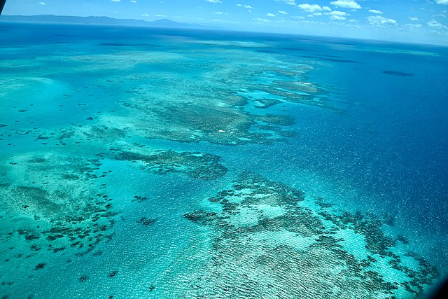

Wonder of the World
Prospect 4: The Great Barrier Reef of Australia is one of the world's seven natural wonders. It is the world's largest coral reef, with a profusion of marine life and hundreds of beautiful tropical islands. It has now become one of the world's most popular tourist sites. Visitors to the Great Barrier Reef can participate in a variety of activities, including snorkeling, scuba diving, aircraft or helicopter flights, bare boats, glass-bottomed boat viewing, semi-submersibles and educational cruises, cruise ship tours, whale watching, and swimming with dolphins.
Did you know? It is larger than the Great Wall of China and the only living thing on earth visible from space.